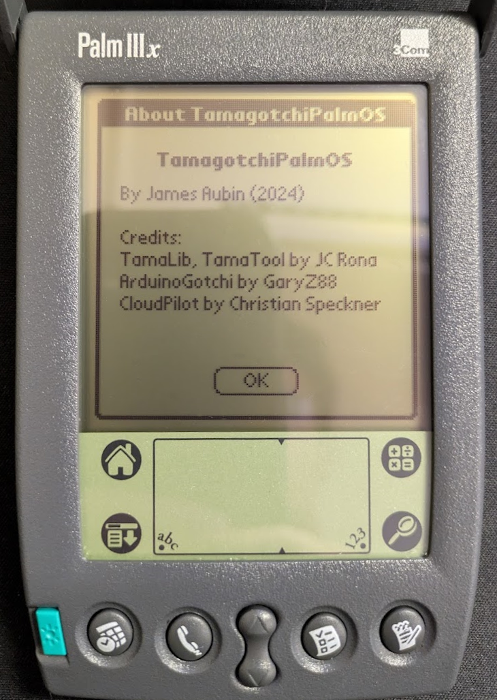
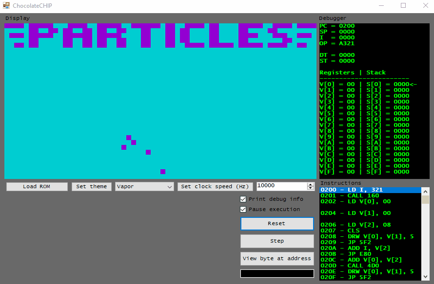
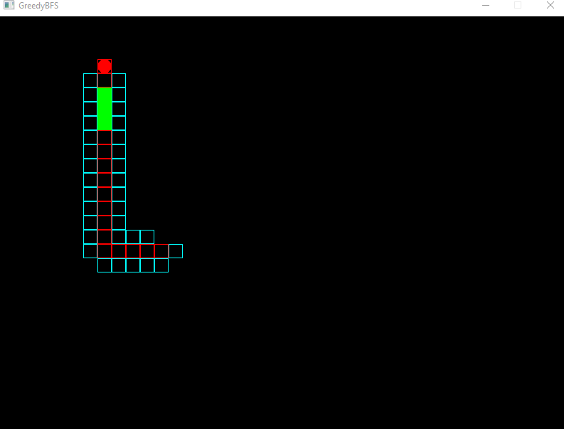

Raycasting Game Engine
"2.5D" game engine that renders a pseudo-3D perspective projection from 2D world data. supports texture-mapped walls, collision detection, and game entities.

Hardware-agnostic Tamagotchi emulator library ported to Motorola 68k-based Palm OS devices.
Terminal ballistics calculator for ARMA 3 game/simulator. Accurately simulates projectile physics and computes zero angle, time of flight, terminal velocity, etc.
"2.5D" game engine that renders a pseudo-3D perspective projection from 2D world data. supports texture-mapped walls, collision detection, and game entities.
C#/Winforms-based CHIP-8 Interpreter. Includes a debugger and disassembler in order to analyze code at runtime.
Implemented several popular pathfinding algorithns (BFS/DFS, A-Star) to automate Snake game.
